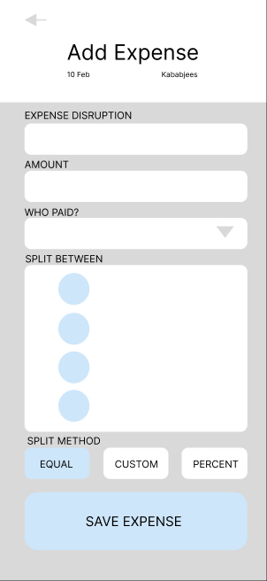

Interface Design – Add Expense Screen (Wireframe Layout)
The Add Expense screen should provide a clear, structured layout to minimize cognitive load and social friction:
- Title Field: “Expense Description” (e.g., Dinner at Kababjees)
- Amount Field: Numeric input with currency symbol (PKR)
- Payer Selector: Dropdown with profile pictures
- Participants Checklist: Names with checkboxes and status indicators
- Split Options: Equal / Custom / Percentage
- Submit Button: Prominent color, clear label (“Save Expense”)
- Feedback Area: Confirmation message and updated balances
This wireframe ensures visibility, error prevention, and social transparency in expense recording.
Norman’s Stages Applied to Expense Sharing
| Norman’s Stage | Real-World Example (Adding Dinner Expense) | HCI Challenge & Design Solution | Social Dimension |
|---|---|---|---|
| Goal | “Record that Maria paid 5000 PKR for group dinner at Kababjees so everyone pays fairly.” | Complex intent: not just data entry, but ensuring fairness and transparency. | Avoiding arguments about money among friends; maintaining trust. |
| Plan |
1. Open Splitwise 2. Tap “Add Expense” 3. Enter description & amount 4. Select payer 5. Choose participants 6. Select split method 7. Submit |
Multiple decision points: who ate, who should pay, is the split fair? Design must reduce decision complexity with clear defaults and options. |
Sensitive social context: fairness and inclusion of all relevant participants. |
| Specify | “Type ‘Dinner Kababjees’, enter ‘5000’, select ‘Maria’ as payer, check Ali, Ahmed, Sara, choose ‘Equal split’, tap ‘Save’.” |
Memory burden: recalling names, amounts, and details. Solution: autocomplete, participant suggestions, and contextual defaults. |
Social pressure to be accurate : fear of being seen as unfair or careless. |
| Execute | Actions: typing, selecting payer, checking participants, choosing split, confirming. |
Interface needs: clear fields, dropdowns with profile pictures, checklists, split options, and a distinct “Save” button. Design must minimize slips and support quick entry. |
Physical actions may interrupt ongoing social interaction at the dinner table. |
| Perceive |
Feedback: 1. green checkmark animation 2. “Expense added!” message 3. updated balances 4. notification sounds 5. new entry in activity list. |
Multiple feedback channels required to ensure visibility and confirmation. | Others must also perceive the action happened to avoid confusion or disputes. |
| Interpret | “The expense is saved. Ali, Ahmed, and Sara each owe 1250 PKR. Maria will be reimbursed 3750 PKR. Notifications sent to all.” | Complex interpretation: understanding financial implications and system calculations. | Social trust: did everyone get notified, and do they agree with the split? |
| Evaluate |
1. Check expense in group history 2. Verify all participants included 3. Confirm split calculations 4. Check others acknowledged receipt |
Multi-step verification required; design should support easy review and correction. | Social verification: did anyone object or raise concerns? Is fairness perceived? |
Norman’s Execution–Evaluation Cycle
This table applies Norman’s seven stages of action to the “Add Expense” task in Splitwise. It highlights cognitive processes, usability challenges, and social dimensions such as fairness and trust. Norman’s model explains why usability problems occur by focusing on gulfs of execution and evaluation.
GOMS Model Applied to Expense Sharing
| GOMS Element | Real-World Example (Adding Dinner Expense) | HCI Challenge & Design Solution | Social Dimension |
|---|---|---|---|
| Goal | Record dinner expense fairly so that Maria’s payment of 5000 PKR is shared among Ali, Ahmed, and Sara. | The system must support clear goal articulation and mapping to actions. | Ensures fairness and avoids disputes about who owes what. |
| Operators | Tap buttons, Type description and amount, Select payer, Check participants, Confirm split. | Each operator must be simple, visible, and error-tolerant. | Physical actions should be quick to avoid disrupting social interaction. |
| Methods |
Method A: Equal split among all participants. Method B: Custom split (e.g., exclude someone or adjust shares). Method C: Percentage-based split (rare but possible). |
Interface must present methods clearly and allow easy switching. | Social sensitivity: choice of method must reflect group agreement. |
| Selection Rules |
If all participants ate → use Equal split. If some did not eat → use Custom split. If contributions differ → use Percentage split. |
Rules must be intuitive and supported by interface defaults. | Prevents unfairness and ensures transparency in group decisions. |
| Task Structure |
Hierarchical decomposition: • Goal: Record expense • Sub-goals: Enter details, select payer, choose participants, select split, save • Operators: Tap, type, select, check, confirm |
Structured task flow reduces cognitive load and supports expert use. | Clear structure reassures group members that process is fair and consistent. |
| Predictions | GOMS predicts relative efficiency of different methods (Equal vs. Custom). | Designers can compare task times and optimize interface for common cases. | Faster, simpler methods reduce social friction and encourage adoption. |
GOMS Task Decomposition
This table analyzes the same “Add Expense” task using the GOMS framework. It breaks the task into Goals, Operators, Methods, and Selection Rules, showing how expert users structure routine actions. GOMS predicts relative efficiency of different methods and helps designers understand task logic.
Keystroke-Level Model (KLM) Applied to Expense Sharing
| KLM Operator | Real-World Example (Adding Dinner Expense) | HCI Challenge & Design Solution | Social Dimension |
|---|---|---|---|
| K – Keystroke | Typing “Dinner Kababjees” in description field and entering “5000” in amount field. | Must minimize typing errors; numeric field should enforce valid input (currency format). | Mistyped values can cause disputes; accuracy is socially critical. |
| P – Pointing | Pointing to dropdown to select payer (Maria) and to checkboxes for participants (Ali, Ahmed, Sara). | Targets must be large and well-spaced to reduce slips; profile pictures aid recognition. | Ensures correct inclusion of participants; omission may be perceived as unfair. |
| B – Button Press | Pressing “Save Expense” button to confirm entry. | Button must be distinct in color and label to avoid accidental presses. | Clear confirmation reassures group that expense was recorded. |
| H – Homing | Switching between keyboard (typing description/amount) and mouse/touch (selecting payer, participants). | Excessive homing increases task time; design should minimize device switching. | Smooth flow avoids awkward pauses during social interaction. |
| M – Mental Preparation | Pausing to decide split method (Equal vs. Custom). | Interface should provide clear defaults (Equal split) to reduce decision time. | Socially sensitive: choice reflects fairness; hesitation may cause tension. |
| R – System Response | System feedback: “Expense added!” message, updated balances, notifications sent. | Response must be immediate and unambiguous; delays increase uncertainty. | Group members rely on visible confirmation to trust the record. |
| Sequence Example | H[keyboard] → K[“Dinner Kababjees”] → K[5000] → H[mouse] → P[Select payer] → P[Check participants] → M[Choose split] → B[Save] → R[Confirmation]. | Sequence shows execution-level detail; designers can estimate task time. | Predictable flow reassures users and supports social transparency. |
| Prediction | KLM predicts execution time for expert, error-free performance of the Add Expense task. | Useful for comparing efficiency of different interface layouts (e.g., fewer homing actions). | Faster, smoother execution reduces social disruption and increases trust. |
Keystroke-Level Model (KLM)
This table applies the Keystroke-Level Model to the expense-sharing task, focusing on execution-level operators such as keystrokes, pointing, button presses, homing, mental preparation, and system response. KLM predicts execution time for expert, error-free performance, allowing designers to compare interface efficiency at the operator level.